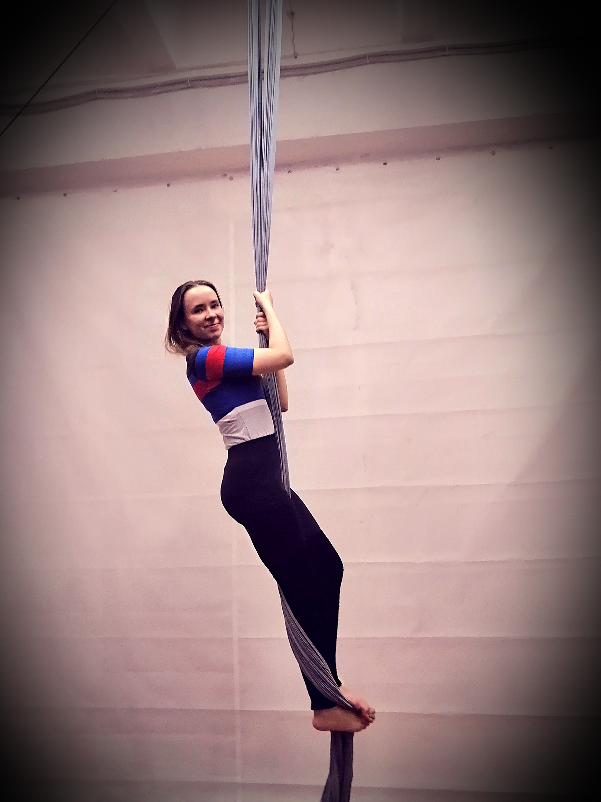

(Категория: подъемы)
Стоя на полу.
Заматываем полотна левой (правой) ногой снаружи вовнутрь 1 раз, стопой свободной ноги встаем на подъем замотанной ноги так, чтобы между стопой и подъемом оказалось полотно. Зажимая таким образом полотно образуется замок, стоя на котором можно отпустить одну руку от полотна и отвести ее в сторону. Делаем смену рук. Удерживаем корпус параллельно полотнам. Допускается поднятие стопы нижней ноги наверх (не натянутый носок).
✔ Выполнен подъем с левой ноги (3 шага)
✔ Выполнен подъем с правой ноги (3 шага)
✔ Выполнена смена рук
✔ Удержание 3 секунды
(Категория: подъемы)

Стоя на полу.
Прислоняем согнутую в колене и стопе левую (правую) ногу к полотну так, чтобы полотно оказалось с внутренней стороны колена и наружной стороны стопы. Правой (левой) ногой подхватываем стопой полотно снизу так, чтобы оно образовало петлю для согнутой ноги, и зажимаем полотно между стопой и подъемом, образуя замок. Удерживаем корпус параллельно полотнам. Делаем смену рук.
✔ Выполнен подъем с левой ноги (3 шага)
✔ Выполнен подъем с правой ноги (3 шага)
✔ Выполнена смена рук
✔ Удержание 3 секунды
(Категория: подъемы)

Стоя на полу.
Выполняется небольшой прыжок, ноги идут через группировку и раскрываются в разножку с прямыми ногами, ноги над головой. Цепляем одно подколенно за полотно, прижимаем второе колено к первому, перехватываем руки и делаем вход в положение ножницы. Колени и носки натянуты.
✔ Выполнен подъем с левой ноги (1 шаг)
✔ Выполнен подъем с правой ноги (1 шаг)
✔ Выполнен элемент "Ножницы"
(Категория: крутки)
Выполнен элемент "ножницы"
Выполнив заход в элемент "ножницы" на левую/правую сторону, взяться левой/правой рукой за верхнее полотно, а правой/левой рукой за нижнее полотно и начать вращение нижнего полотна против часовой стрелки (рисуя им на мате большой круг), постепенно ускоряя вращение. Принять положение "группировки": колени согнуты, прижаты к груди, обе руки обнимают колени, носки натянуты.
✔ Выполнен элемент на левую сторону
✔ Выполнен элемент на правую сторону
✔ Удержание группировки во вращении 3 секунды
❊ Скорость вращения не оценивается
(Категория: обрывы)
Вис на руках на разъединенных полотнах на высоте
Сделать двойную спиральную замотку ног (одновременно или поочередно), соединить ноги и стопы вместе. Вывести корпус и руки вперед между полотнами и взять нижние хвосты полотен под стопами. Удерживая хвосты руками, развести ноги в стороны и согнуть колени. Получается вис с зацепом под колени головой вниз, руки можно отпустить. Носки натянуты.
✔ Выполнен обрыв
✔ Удержание элемента 3 секунды
(Категория: замотки)
Выполнена замотка ног
Взяться двумя руками за левое/правое полотно, раскрыть ноги в шпагатную линию. Колени и носки натянуты. Откидываясь корпусом назад, начать вращение передней ногой по/против часовой стрелке, при этом на заднюю ногу будет накручиваться полотно. После каждого оборота сделать акцент на раскрытии шпагатной линии.
✔ Выполнен элемент на левую сторону
✔ Выполнен элемент на правую сторону
✔ Удержание элемента 3 секунды
❊ Шпагат не оценивается
(Категория: замотки)
Выполняется с полотен на высоте
Заход в ножницы, переносим полотно над головой, разъединяем полотна и просовываем корпус между полотен с одновременным проворачиванием корпуса. Садимся на полотна в положение "качельки". Делаем крест из полотен перед собой и поднимаем ноги над крестом до уровня тазовых костей. В положении виса на животе головой вниз разъединяем полотна. Потом поднимаем корпус так, чтобы плечи упирались в полотна. Берём хвосты полотен и отводим руки в стороны с полотнами. Ноги в произвольной позиции, носки натянуты.
✔ Выполнен заход через левую сторону
✔ Выполнен заход через правую сторону
✔ Удержание элемента 3 секунды
(Категория: висы)
Вис на руках на соединенных полотнах на высоте (минимум 3 шага подъема)
Замотать стопы "восьмеркой": сделать поочередно три оборота полотна на стопы (правая-левая-правая). Ноги выпрямлены в коленях, замотка полотен плотно прижата к стопам. Отпустить руки и корпус вниз (без обрыва). Натянуть стопы, колени и носки.
✔ Выполнена замотка ног
✔ Удержание элемента 3 секунды
❊ Обрыв не оценивается
(Категория: висы)
Выполнена замотка узла на ноге на соединенных полотнах
Стоим на замотанной ноге, руки держаться за разъединенные полотна. Опустить руки по полотнах вниз до уровня талии. Откинуть корпус назад, свободная нога сгибается в колене. Также свободную ногу можно выпрямить для раскрытия шпагатной линии. Колени и носки натянуты.
✔ Выполнен элемент на левую сторону
✔ Выполнен элемент на правую сторону
✔ Удержание элемента 3 секунды
❊ Шпагат не оценивается
(Категория: замотки)
Выполнена замотка узла на ноге на двух полотнах
Стоя на замотанной ноге, развернуться лицом и корпусом к правому/левому полотну и схватить его двумя руками, сделать 2-3 оборота с оттяжкой полотна свободной ногой (полотно будет наматываться на завязанную ногу), упереться животом в переднее полотно. Намотанная нога прямая, носки натянуты, после закруток передняя часть корпуса должна лечь по центру на полотно, руки разведены в стороны.
✔ Выполнен элемент на левую сторону
✔ Выполнен элемент на правую сторону
✔ Удержание элемента 3 секунды
❊ Подъем ⇨ "Корзиночка" ⇨ "Солнышко"
❊ Подъем ⇨ Оттяжка назад ⇨ "Ленивая пантера"
❊ Подъем ⇨ Крутка из ножниц ⇨ "Дракоша"